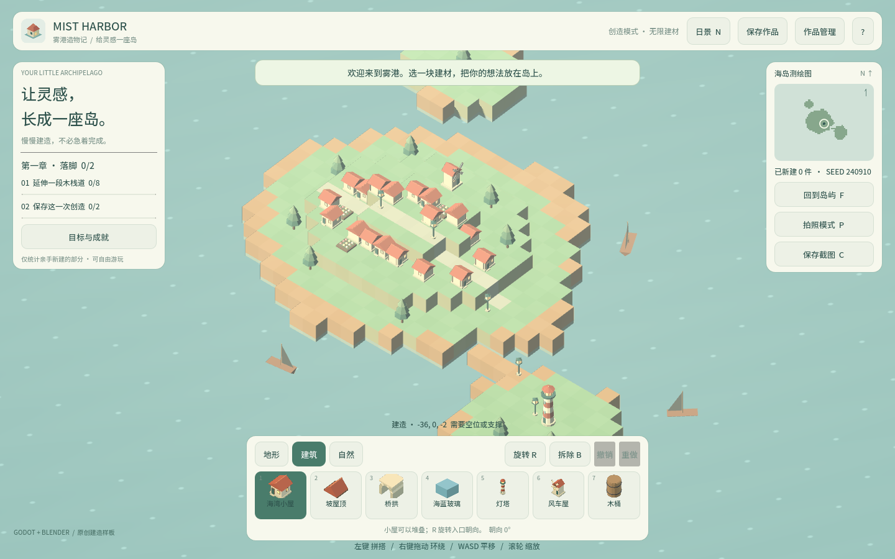
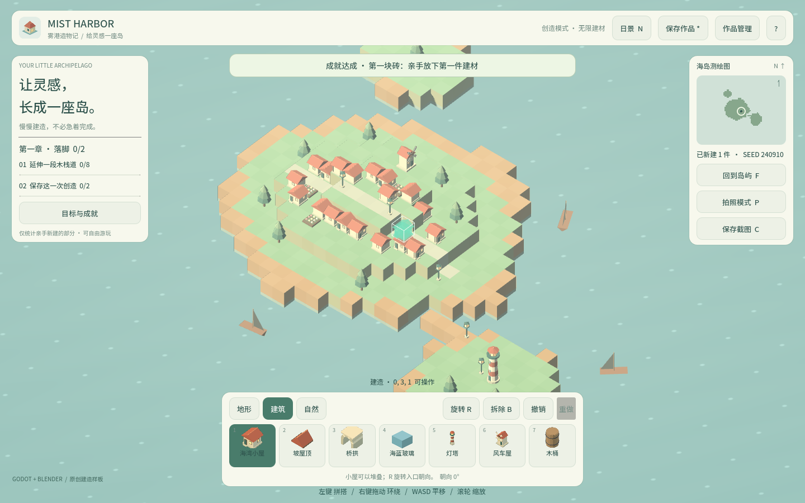
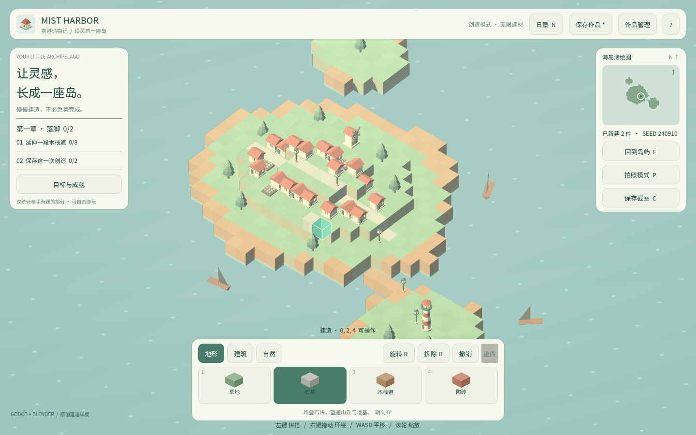

卷 2 · 第 09 章 导入管线：GLB 怎么变成 Godot 能用的资源
本章目标：理解
.import文件与.godot/缓存的关系，知道什么时候必须重新导入，
以及"导入"与"导出"之间那条容易被忽略的过滤链。
对应任务：T09 / T41 | 对应提交：3f69241（导出目录移出工程）
9.1 Godot 不直接用你的 GLB
把 barrel.glb 丢进 assets/models/，Godot 会做两件事：
- 生成导入产物：真正的资源（
.scn/.res/ 纹理）放进.godot/imported/ - 生成描述文件：
barrel.glb.import，记录 uid、参数、产物路径
游戏运行时加载的是产物，不是原始 GLB。所以：
.godot/是缓存 → 可以安全删除，删了会重新导入（慢一点，不影响正确性）.import是配置 → 必须入库，它决定了"这个模型怎么被导入"
assets/models/barrel.glb 原始资产（入库）
assets/models/barrel.glb.import 导入参数（入库）
.godot/imported/barrel.glb-*.scn 导入产物（不入库，可重建）9.2 .import 里有什么
[remap]
importer="scene"
type="PackedScene"
uid="uid://bxxxx"
path="res://.godot/imported/barrel.glb-65b4....scn"
[deps]
source_file="res://assets/models/barrel.glb"
dest_files=["res://.godot/imported/barrel.glb-65b4....scn"]
[params]
nodes/root_type=""
nodes/apply_root_scale=true
meshes/ensure_tangents=true
meshes/generate_lods=true
gltf/naming_version=1重点在 [params]：改这里的任何一个值，都会触发重新导入。
本实训的资产管线在写完 GLB 后会自动跑一次 headless 导入，就是为了让它生成/刷新这个文件。
9.3 什么时候必须重新导入
| 场景 | 要不要重新导入 | 怎么做 |
|---|---|---|
| --- | --- | --- |
| 改了 GLB 本身 | ✅ | python tools/dev.py import |
改了 .import 参数 | ✅ | 同上 |
| 换引擎主版本 | ✅ | 首次打开/导入时自动做 |
删了 .godot/ | ✅（自动） | 下次运行会重建 |
| 只改 GDScript | ❌ | 不需要 |
python tools/dev.py import # 等价于 godot --headless --path project --editor --import --quit9.4 一次真实观察：4.7 补写了什么
本实训曾删掉 .godot/ 让 4.7 重新导入，结果三个 .import 被补写了新字段：
+ nodes/root_script=null
+ mesh_library/use_node_names_as_mesh_names=false
+ array_mesh/deduplicate_surfaces=true
+ nodes/use_name_suffixes=true
+ materials/extract=0
+ gltf/texture_map_mode=0要点：这些都是新增的默认值，没有任何既有项被修改——所以导入结果不变，只是 4.7 把自己的新选项写进了文件。
这类 diff 出现时不必惊慌，但也别盲合：确认是"新增默认值"再提交。
9.5 导入 与 导出：中间还有一层过滤
原始资产（含 art/） → 导入（.godot） → 导出过滤 → pck / wasm
↑
export_presets.cfg 的 include / excludeart/（Blender 源与建模脚本）被exclude_filter排除 → 不会进包- 但它在工程目录里，所以会被导入器扫描——这也是为什么
project/build/必须移出工程（第 04 章） tests/同样被排除，但它的.py不会被 Godot 当资源
📌 一句话："在工程里"不等于"进包"，也不等于"被导入"。三件事各有一张清单：
export_presets.cfg（进包）、.import存在与否（被导入）、.gitignore（入库）。
🌩 在云端 agent（web-cb）里是什么样
| 🖥 本地路线 | 🌩 云端 agent（web-cb） | |
|---|---|---|
| --- | --- | --- |
| 导入 | dev.py import（本地 Godot 4.7） | 平台内执行同一命令；引擎版本由平台镜像决定 |
.godot/ | 本地缓存，删了重建 | 同样可重建；不要把它当产物提交 |
| 排错 | 看 logs/import.log | 平台日志入口，同样看 SCRIPT ERROR 行 |
| 风险 | 版本不一致 | 平台引擎版本必须与 project.godot 的 features 对齐，否则重新导入会改写大量 .import |
🌩 提醒：若云端引擎版本与工程声明不一致，最典型的症状就是大量
.import同时变红。
先查版本，再查代码。
9.6 常见坑速查（本章）
| 现象 | 原因 | 处理 |
|---|---|---|
| --- | --- | --- |
| 改了 GLB 但游戏里没变 | 没重新导入 | dev.py import |
大量 .import 同时变化 | 引擎版本变了 | 确认是有意升级再提交 |
| 导出包里有不该有的文件 | exclude_filter 没覆盖 | 改 export_presets.cfg |
| 启动日志扫到导出产物 | 产物在工程目录内 | 移到仓库根的 build/ |
.godot 被误提交 | .gitignore 失效 | 检查是否被上层规则覆盖 |
9.7 本章作业
- 打开
assets/models/barrel.glb.import，说出[remap]里path指向哪里，以及它为什么不入库 - 删掉
.godot/（或改名），跑一次dev.py import，记录耗时与文件变化 - 找出本工程里"在工程内、但不进包"的两类文件，说明各自为什么被排除
- 故意改一个
.import的[params]（例如meshes/generate_lods），重新导入，观察变化后改回
🎓 教学提示（给教师 / 直播主）
- 概念锚点：原始资产 ≠ 运行时资源。中间隔着一个"导入器"。
- 课堂演示：删
.godot/→ 跑导入 → 看目录重建。让学生理解"缓存可弃、配置要存"。 - 高频误解：学生常把
.godot/imported/提交进 git。强调它可重建、且体积大。 - 讨论题：为什么
.import要入库而.godot/不要？（前者是决策，后者是结果） - 批改要点：作业 1 必须答出"产物路径 + 可重建"，只答"缓存"给一半分。
🖼 本章图集



📹 录屏分镜（8 分钟）
| 时间 | 画面 | 解说词要点 |
|---|---|---|
| --- | --- | --- |
| 00:00–01:20 | GLB / .import / .godot 三者并排 | "游戏用的不是你的 GLB。" |
| 01:20–02:40 | 打开 .import 讲 [remap] [deps] [params] | "这是决策，要入库。" |
| 02:40–04:00 | 删 .godot 重导入，看目录重建 | "这是结果，可弃。" |
| 04:00–05:20 | 4.7 补写字段的 diff | "新增默认值，不慌但要看。" |
| 05:20–07:00 | 导入→导出过滤链 | "在工程里 ≠ 进包 ≠ 被导入。" |
| 07:00–08:00 | 作业 + 预告（build_world） |
🎬 视频位（待录制）
把录好的视频放到course/media/video/09/（mp4 / webm / mov），重新执行 python tools/course_build.py 即会自动内嵌；首帧默认用本章第一张截图作为封面。分镜脚本见上一节。🖼 配图清单
| 文件名 | 内容 | 生成方式 |
|---|---|---|
| --- | --- | --- |
09-game-start.png | 起始画面 | python tools/course_capture.py --chapter 09 |
09-prop-placed.png | 放置一件 GLB 道具（小屋） | 同上 |
09-terrain-face.png | 放置地形格（看露出的面） | 同上 |
🎥 直播脚本（L3 片段，10 分钟）
- 开场提问："你提交到 git 的是模型本体还是导入产物？"——投票后揭答案
- 演示：删
.godot重导入（现场计时） - 互动：让观众读自己工程里一个
.import的 [params] 并说出改它会怎样 - 收尾：三张清单（进包 / 被导入 / 入库）
❓ 本章 FAQ
Q：能关掉导入、直接用 GLB 吗？
A：不建议。Godot 的运行时格式是导入后的产物，直接读源格式在导出包里不可用。
Q：.godot 越来越大怎么办？
A：删掉重导入即可。它按内容哈希命名，残留的旧产物会随 git gc 式清理消失（或直接删除目录）。
Q：为什么我的同事 clone 下来第一次打开很慢？
A：因为 .godot/ 没有入库，第一次运行要重建全部导入产物——这是正确行为。